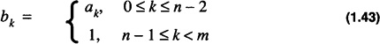

by Alan Parker
CRC Press, CRC Press LLC
ISBN: 0849371716 Pub Date: 08/01/93
|
|
Algorithms and Data Structures in C++
by Alan Parker CRC Press, CRC Press LLC ISBN: 0849371716 Pub Date: 08/01/93 |
| Previous | Table of Contents | Next |
This section investigates the conversion from an n-bit number to an m-bit number for signed-magnitude, unsigned, and 2’s complement. It is assumed that m>n. This problem is important due to the fact that many processors use different sizes for their operands. As a result, to move data from one processor to another requires a conversion. A typical problem might be to convert 32-bit formats to 64-bit formats.
Given A as
and B as
the objective is to determine bk such that B = A.
For signed-magnitude the bk are assigned with
The conversion for unsigned results in
For 2’s complement there are two cases depending on the sign of the number:
(a) (an - 1 = 0) For this case, A reduces to
It is trivial to see that the assignment of bk with
satisfies this case.
(b) (an - 1 = 1) For this case
By noting that
The assignment of bk with

satisfies the condition. The two cases can be combined into one assignment with bk as
The sign, an - 1, of A is simply extended into the higher order bits of B. This is known as sign-extension. Sign extension is illustrated from 8-bit 2’s complement to 32-bit 2’s complement in Table 1.5.
| 8-Bit | 32-Bit |
|---|---|
| 0xff | 0xffffffff |
| 0x0f | 0x0000000f |
| 0x01 | 0x00000001 |
| 0x80 | 0xffffff80 |
| 0xb0 | 0xffffffb0 |
This section demonstrates the handling of 16-bit and 32-bit data by two different processors. A simple C++ source program is shown in Code List 1.3. The assembly code generated for the C++ program is demonstrated for the Intel 80286 and the Motorola 68030 in Code List 1.4. A line-by-line description follows:
The 80286 executes a mov instruction. The mov instruction is used for 16-bit operations.
The 80286 executes an add instruction storing the result at the address of the variable i. The instruction does not involve the variable j. The compiler uses the immediate data, 2, since the assignment of j to 2 was made on the previous instruction. This is a good example of optimization performed by a compiler. An unoptimizing compiler would execute
similar to the 68030 example.
The 80286 executes two immediate moves. The 32-bit data is moved to the address of the variable k in two steps. Each step consists of a 16-bit move. The least significant word, 3, is moved first followed by the most significant word,0.
The 80286 performs the 32-bit operation in two 16-bit instructions. The first part consists of an add instruction, add, followed by an add with carry instruction, adc.
Code List 1.3 Assembly Language Example
Code List 1.4 Assembly Language Code
This example demonstrates that each processor handles different data types with different instructions. This is one of the reasons that the high level language requires the declaration of specific types.
Floating point is the computer’s binary equivalent of scientific notation. A floating point number has both a fraction value or mantissa and an exponent value. In high level languages floating point is used for calculations involving real numbers. Floating point operation is desirable because it eliminates the need for careful problem scaling. IEEE Standard 754 binary floating point has become the most widely used standard. The standard specifies a 32-bit, a 64-bit, and an 80-bit format.
| Previous | Table of Contents | Next |
){kind=link}
){kind=link}